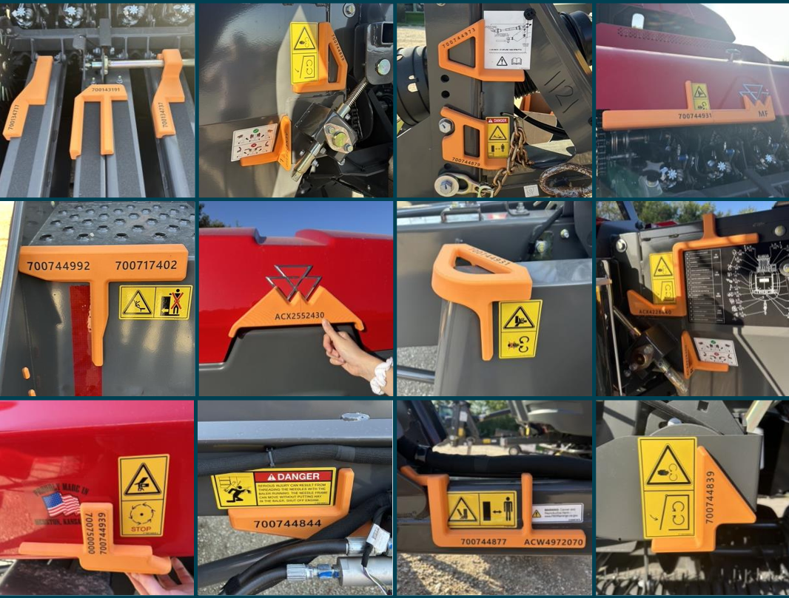

Camden Waterson
Mechanical Engineering Student at Kansas State University
Interested in mechanical design, manufacturing engineering, automation, and product development.
Mechanical Engineering Student at Kansas State University
Interested in mechanical design, manufacturing engineering, automation, and product development.
I am a Mechanical Engineering student at Kansas State University with a passion for manufacturing, design, product development, and process improvement. Through my experiences at AGCO, I have developed a strong foundation in engineering design, problem-solving, and continuous improvement within a manufacturing environment. As a Manufacturing Engineering Intern, I have designed and prototyped solutions that improve safety, quality, and efficiency, including a wireless RPM sensor system, assembly accuracy tools, and cost-saving 3D printed replacement components. I enjoy finding practical engineering solutions that deliver measurable results and create value on the production floor. Previously, I worked as a Design Engineering Intern where I created and revised engineering drawings, developed CAD models for prototype and production applications, and supported emissions compliance updates for Gleaner combines. These experiences strengthened my technical skills while giving me valuable insight into the product development lifecycle. My technical background includes Creo Parametric, SOLIDWORKS, manufacturing systems, technical communication, and collaborative problem-solving. I am also a Certified SOLIDWORKS Professional in Design and Sheet Metal, demonstrating my commitment to engineering excellence and continuous learning. Outside of academics and work, I am actively involved with the Helwig Farms Quarter Scale Tractor Team at Kansas State University, where I continue to expand my hands-on engineering experience while working alongside other driven students. I am passionate about applying engineering principles to real-world challenges and am always looking for opportunities to learn, innovate, and contribute to the future of manufacturing and agricultural equipment.
Manufacturing Engineering Intern
Design Engineering Intern

AUTOMATION & CONTROLS
This is a wireless RPM calibration solution using Arduino technology to provide rotational speed information for a Gleaner combine chaff spreader. This was achieved by using the Arduino's built-in WiFi signal to transmit data to any device with WiFi capabilities, in this case a tablet. This solved a major safety concern of an assembly operator using a handheld timing gun standing closely to rotating spreader blades, just shy of 1000 RPM when running at operating speed. It uses a simple photoelectric sensor and is powered by a Milwaukee M18 battery, eliminating an additional safety concern of tripping over a sensor power cord during operation. The final product has a 3D-printed case enclosing all electronics, but is not shown in this image with the intent to illustrate circuit components.

MANUFACTURING ENGINEERING
This is an engineered Creo model to replace a paint gun barrel in an electrostatic paint gun, used in a powder-coating paint application. The sourced barrels were manufactured with narrow ports that are difficult to clean and maintain. These ports build up with paint material, degrading performance and requiring replacement of the paint gun barrel. This model was designed with the intent to find a more cost-effective solution while maintaining the gun's functionality, saving over $1,000 for each barrel replaced.

PROCESS IMPROVEMENT
Decal alignment aids assist the assembly station operator in maintaining consistent and accurate decal placement for every decal on a Hesston by Massey Ferguson SB.1436DB small square baler. Engineering work instructions call out strict decal placement, and without an alignment aid, the operator resorts to measuring decal placement by hand with a tape measure. The photos shown illustrate the difficulty operators face when applying decals without an aid, with some decals not aligning properly when compared with the alignment aids. This introduces a fair amount of variability in the assembly process, which can be solved by utilizing the 3D-printed decal alignment aids.
I'm always interested in connecting with engineers, recruiters, and professionals working in mechanical design, manufacturing, and engineering.